Otto proposte in versione 2; Alla Goccia e Un Altro... Grappino... in versione 3 dopo le rimozioni con maschera. Giudizio sulle nuove versioni: In attesa. Due ritocchi con maschera, una richiesta per carta. Giudizio precedente e prompt preventivi · Prompt iniziali invariati. I campi non salvano automaticamente il testo.
Fino all'Ultima Goccia
base.pino.QuestoLoFiniscoIo · Proposta corrente: versione 2 · Giudizio: In attesa.
A 60 px
Bevuta e seduta tonda senza schienale leggibili; matita corta orizzontale, punta troppo minuta per verificarne la grafite.
Matita corta con legno temperato e punta scura a sinistra; eliminati gomma e ghiera da quel lato. La scena resta quella della versione 1.
Versione 1 e giudizio precedente
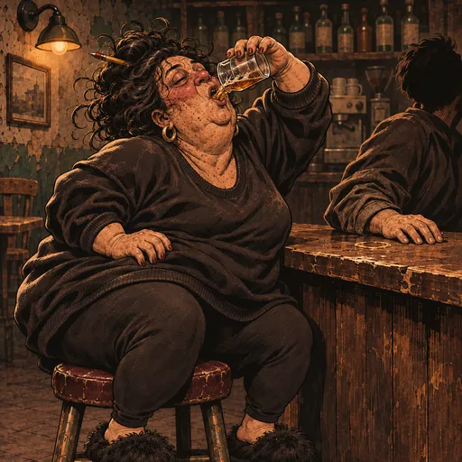
ultima goccia: la matita ha la punta dalla parte della gomma
Posto Fisso
base.pino.bound.CinqueMinutiEVado · Proposta corrente: versione 2 · Giudizio: In attesa.
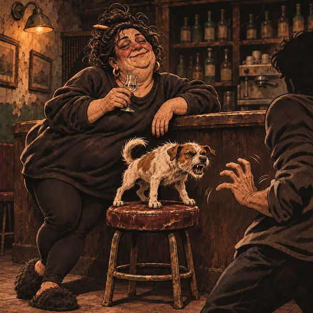
A 60 px
Cane sullo sgabello e cliente che arretra leggibili; punta della matita minuta; seduta tonda visibile, quattro zampe non separabili.
Matita corta appoggiata ai ricci, legno temperato e punta scura visibili a piena risoluzione. Quattro zampe del cane presenti, una posteriore parzialmente coperta; cane separato dalle gambe di Piera.
Versione 1 e giudizio precedente
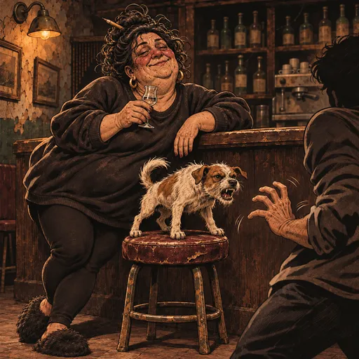
posto fisso: la punta della matita è strana
Schiarirsi le Idee
base.pino.bound.Coccio · Proposta corrente: versione 2 · Giudizio: In attesa.
A 60 px
Mani al viso e lavandino leggibili; matita orizzontale visibile ma grafite non verificabile; nessuna seduta.
Matita appoggiata quasi orizzontalmente ai ricci, con legno chiaro temperato e punta scura; il fusto è stato ridisegnato tra le ciocche. Scena del lavaggio mantenuta.
Versione 1 e giudizio precedente
schiarirsi le idee: la punta della matita è strana
Ultimo Giro
base.pino.UltimoGiro · Proposta corrente: versione 2 · Giudizio: In attesa.
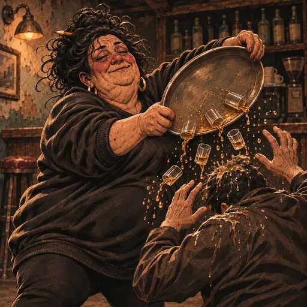
A 60 px
Interno del vassoio e caduta dei bicchieri leggibili; uniformità dei singoli bicchieri e punta della matita troppo minute; seduta sul fondo poco distinta.
Superficie concava del vassoio e bordo rialzato rivolti allo spettatore; sei bicchieri cilindrici simili, con differenze prospettiche. Alcuni bicchieri in volo trattengono ancora liquido. Matita ridisegnata senza gomma sul lato appuntito.
Versione 1 e giudizio precedente
ultimo giro: i bicchieri che cadono sono tutti diversi e il vassoio è al contrario, e la punta della matita è strana
Scompenso da Ultimo Giro
base.pino.TestataDaUltimoGiro · Proposta corrente: versione 2 · Giudizio: In attesa.
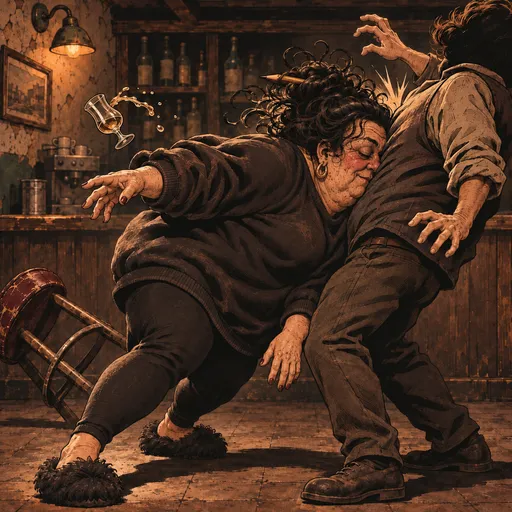
A 60 px
Caduta e urto leggibili; matita quasi orizzontale, punta minuta; seduta rovesciata senza schienale visibile.
Matita quasi orizzontale lungo i ricci, con punto scuro esposto a sinistra; il tratto visibile non entra nella pelle. Caduta, contatto e sgabello mantenuti.
Versione 1 e giudizio precedente
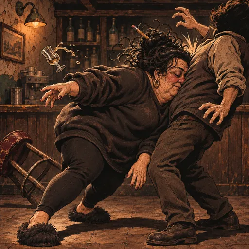
scompenso: va bene ma la matita sembra conficcata nella testa, mettiamola più inclinata
Alla Goccia
base.pino.GoingBerserk · Proposta corrente: versione 3 · Giudizio: In attesa.
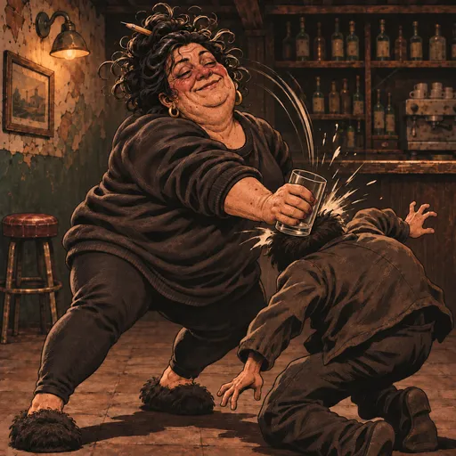
A 60 px
Colpo e bicchiere cilindrico leggibili; mano posteriore a sinistra assente, mento asciutto; punta della matita minuta, sgabello senza schienale sul fondo.
Rimossi dita, mano e avambraccio sinistri segnati; fondo del bar e profilo della felpa ricostruiti. Braccio che colpisce, bicchiere e impatto mantenuti. Il braccio posteriore non è esposto.
Versione 2 prima del ritocco con maschera
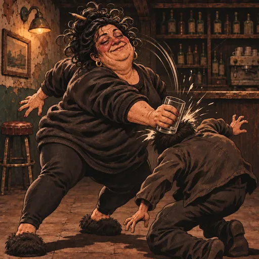
Remove the area marked in the second image from the first image
Versione 1 e giudizio precedente
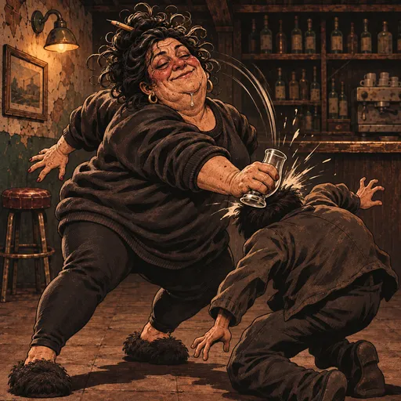
alla goccia: il bicchiere è strano e sembra che piera abbia della bava sul mento
Avamposto Fortificato al Bancone
base.pino.IlBanconeRegge · Proposta corrente: versione 2 · Giudizio: In attesa.
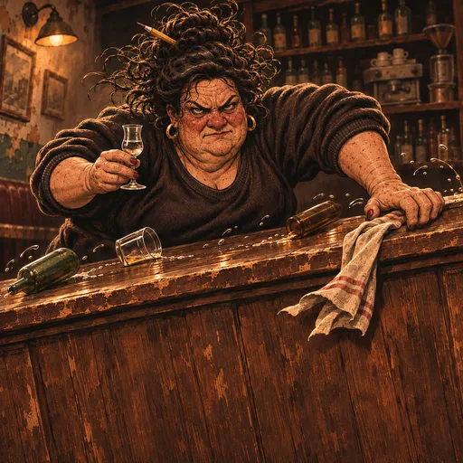
A 60 px
Piera dietro il bancone e sopracciglia aggrottate leggibili; punta della matita minuta; nessuna seduta visibile.
Bancone in primo piano davanti al corpo di Piera, espressione agguerrita e bicchierino verticale. Una mano afferra il bordo: il braccio non avvolge completamente il bancone. Ricomposizione più stretta, gambe e sgabello non visibili.
Versione 1 e giudizio precedente
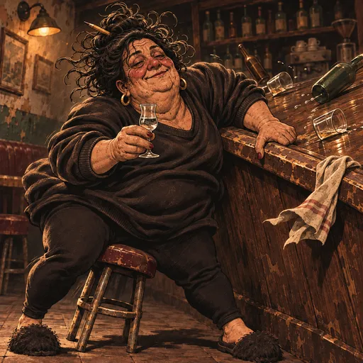
avamposto fortificato: lei dovrebbe essere dietro il bancone, e con una faccia agguerrita
Un Altro e Arrivo
base.pino.OffroIo · Proposta corrente: versione 2 · Giudizio: In attesa.
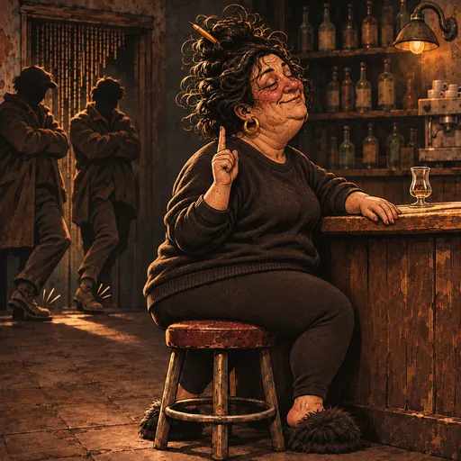
A 60 px
Busto eretto e indice vicino alla spalla leggibili; pollice non verificabile a questa scala; punta della matita minuta, seduta tonda visibile.
Posa più eretta e mano ridisegnata accanto alla spalla; pollice ripiegato presso le dita, dettaglio non verificabile a 60 px. Clienti alla porta e bicchiere sul banco mantenuti.
Versione 1 e giudizio precedente
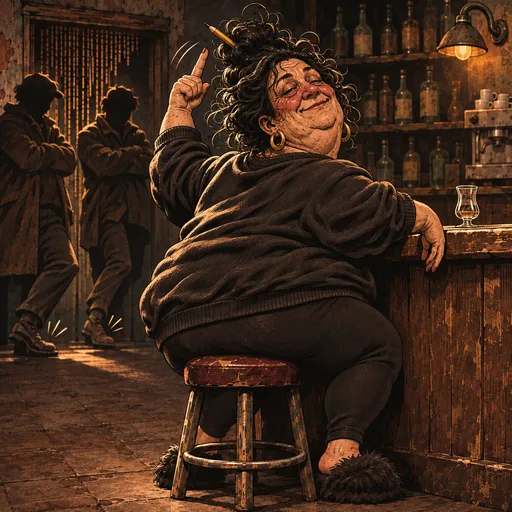
un altro e arrivo: la mano alzata ha il pollice al contrario. non mi piace la posa
Rutto a Bruciapelo
base.pino.RuttoADistanzaSociale · Proposta corrente: versione 2 · Giudizio: In attesa.
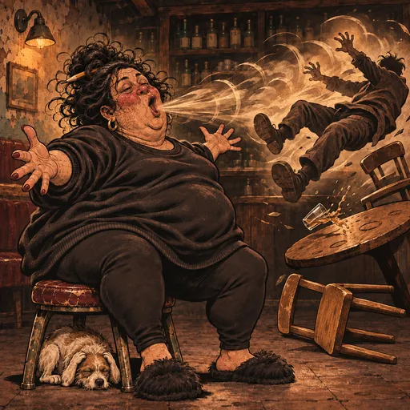
A 60 px
Onda, avversario in volo e sedia laterale leggibili; punta della matita minuta; sgabello senza schienale visibile, quattro zampe di Grappino non verificabili.
Sedia ridisegnata con seduta rettangolare, schienale e quattro gambe orientate verso destra; prospettiva rigida e attacchi da giudicare a piena risoluzione. Matita senza terminale rosso sul lato appuntito. Grappino mantiene le zampe anteriori sulle orecchie e le posteriori nascoste; appoggio di quattro zampe non verificabile.
Versione 1 e giudizio precedente
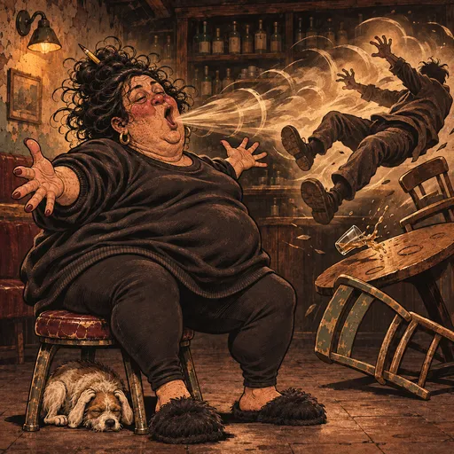
rutto: va quasi bene a parte la matita e la sedia rovesciata che è strana
Un Altro... Grappino...
base.pino.PrimaIlBrindisi · Proposta corrente: versione 3 · Giudizio: In attesa.
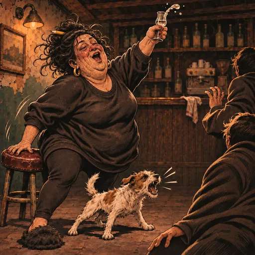
A 60 px
Brindisi e cane leggibili; mano accanto al muso assente; punta della matita minuta, seduta laterale senza schienale visibile, quattro zampe non separabili a 60 px.
Rimossi mano alzata e avambraccio del cliente in primo piano nella zona segnata. Restano la sua mano inferiore e quella alta dell’altro cliente. Grappino è separato dalle gambe di Piera; quattro zampe presenti a piena risoluzione, una posteriore parzialmente coperta.
Versione 2 prima del ritocco con maschera
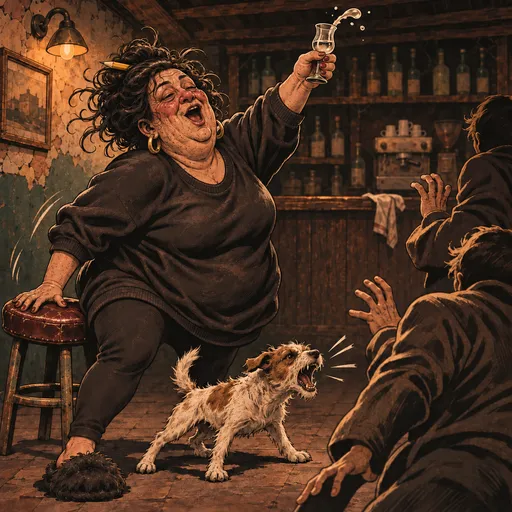
Remove the area marked in the second image from the first image